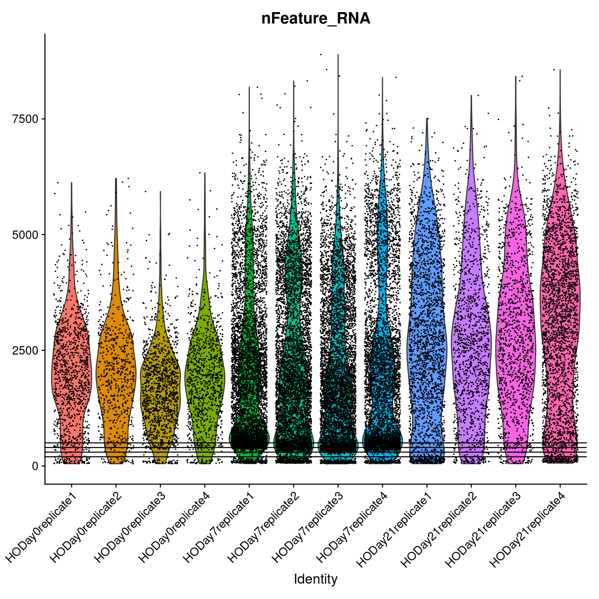

Workflow Overview

Introduction
As discussed at the start of the workshop, single-cell experiments
using 10x Chromium instrument aim to have droplets with one cell plus
one bead. However this is an inherently imperfect process and there are
other important considerations like how healthy or intact the cell was
at the time of measurement.
In this section, our goal is to use filtering thresholds to remove
“cells” that were poorly measured, not cells at all, or included more
than one cell.

|
|
The Cell Ranger barcode feature matrix outputs (A) is a mix of good and
poor quality cells (B). We can use expression patterns to further
visualize and filter to the subset of putative healthy cells (C) to
improve downstream analysis.
|
Similar to many other areas of research, there are often gaps between
how single-cell data is presented versus the reality of running an
analysis. For example, only the final filtering thresholds might be
reported in a paper but our process for choosing those is likely to be
more iterative and include some trial and error.
Objectives
- Discuss QC measures and learn how to calculate and plot them.
- Discuss cell-filtering approaches and apply them to our
dataset.
Adding metadata
We’re going to alter and add some columns to meta.data
to ease some downstream analysis and plotting steps. This will often be
necessary, as sample names contain combined information about
phenotypes. Let’s take a look at the first few rows again, to reacquaint
ourselves.
head(geo_so@meta.data)
orig.ident nCount_RNA nFeature_RNA
HODay0replicate1_AAACCTGAGAGAACAG-1 HODay0replicate1 10234 3226
HODay0replicate1_AAACCTGGTCATGCAT-1 HODay0replicate1 3158 1499
HODay0replicate1_AAACCTGTCAGAGCTT-1 HODay0replicate1 13464 4102
HODay0replicate1_AAACGGGAGAGACTTA-1 HODay0replicate1 577 346
HODay0replicate1_AAACGGGAGGCCCGTT-1 HODay0replicate1 1189 629
HODay0replicate1_AAACGGGCAACTGGCC-1 HODay0replicate1 7726 2602
We can add arbitrary per-cell information to this table such as:
- Summary statistics, such as percent mitochondrial reads for each
cell.
- Batch, condition, etc. for each cell.
- Cluster membership for each cell.
- Cell cycle phase for each cell.
- Other custom annotations for each cell.
First, we’ll make orig.ident a factor in the correct
order of the days so that our plots display in chronological order.
Next, we’ll make a copy of the meta.data data frame so we
are free to make mistakes, and then extract the day and replicate
information.
# Make metadata more granular, this is a quality of life thing
orig.ident_levels = apply(
expand.grid(c('HO'), c('replicate1', 'replicate2', 'replicate3', 'replicate4'), c('Day0','Day7','Day21')),
MARGIN = 1, FUN = function(row){paste(row[1], row[3], row[2], sep = '.')})
tmp_meta = geo_so@meta.data
tmp_meta$orig.ident = gsub('HO', 'HO.', tmp_meta$orig.ident)
tmp_meta$orig.ident = gsub('rep', '.rep', tmp_meta$orig.ident)
tmp_meta$orig.ident = factor(tmp_meta$orig.ident, levels = orig.ident_levels)
# Add day information
tmp_meta$day = factor(str_split(tmp_meta$orig.ident, pattern = '[.]', simplify = TRUE)[,2], levels = c('Day0', 'Day7', 'Day21'))
# Add replicate column
tmp_meta$replicate = str_split(tmp_meta$orig.ident, pattern = '[.]', simplify = TRUE)[,3]
Taking a look at our handiwork:
head(tmp_meta)
orig.ident nCount_RNA nFeature_RNA day replicate
HODay0replicate1_AAACCTGAGAGAACAG-1 HO.Day0.replicate1 10234 3226 Day0 replicate1
HODay0replicate1_AAACCTGGTCATGCAT-1 HO.Day0.replicate1 3158 1499 Day0 replicate1
HODay0replicate1_AAACCTGTCAGAGCTT-1 HO.Day0.replicate1 13464 4102 Day0 replicate1
HODay0replicate1_AAACGGGAGAGACTTA-1 HO.Day0.replicate1 577 346 Day0 replicate1
HODay0replicate1_AAACGGGAGGCCCGTT-1 HO.Day0.replicate1 1189 629 Day0 replicate1
HODay0replicate1_AAACGGGCAACTGGCC-1 HO.Day0.replicate1 7726 2602 Day0 replicate1
Now that we’re satisfied that we have what we want, let’s slide this
table into geo_so@meta.data:
# Assign the updated metadata to that in the Seurat object
geo_so@meta.data = tmp_meta
# Set the Idents(geo_so) to the new orig.ident
Idents(geo_so) = 'orig.ident'
head(geo_so@meta.data)
orig.ident nCount_RNA nFeature_RNA day replicate
HODay0replicate1_AAACCTGAGAGAACAG-1 HO.Day0.replicate1 10234 3226 Day0 replicate1
HODay0replicate1_AAACCTGGTCATGCAT-1 HO.Day0.replicate1 3158 1499 Day0 replicate1
HODay0replicate1_AAACCTGTCAGAGCTT-1 HO.Day0.replicate1 13464 4102 Day0 replicate1
HODay0replicate1_AAACGGGAGAGACTTA-1 HO.Day0.replicate1 577 346 Day0 replicate1
HODay0replicate1_AAACGGGAGGCCCGTT-1 HO.Day0.replicate1 1189 629 Day0 replicate1
HODay0replicate1_AAACGGGCAACTGGCC-1 HO.Day0.replicate1 7726 2602 Day0 replicate1
Quality Metrics
Cell Ranger is a first-pass filter to determine what is a “cell” and
what is not. It only considers one sample at a time, and does not
consider the cells relative to one another.
Let’s dig deeper to determine when a droplet might contain two cells,
a very stressed cell, or some technical issue in the library
preparation. We will use three metrics to determine low-quality cells
based on their expression profiles (reference).
- The total number of UMIs detected. Cells with a small number of UMIs
detected may indicate loss of RNA during library preparation via cell
lysis or inefficient cDNA capture / amplification. Cells with relatively
high number of UMIs detected may indicate a doublet.
- The number of expressed features, defined as number of genes with
non-zero counts. Cells with very few measured genes are likely to be of
low-quality, and may distort downstream variance estimation or dimension
reduction steps.
- The proportion of reads mapped to the mitochondrial genome. High
proportions of mitochondrial transcripts may indicate a damaged cell,
the measure of which may also distort downstream analysis steps.
The number of UMIs detected (nCount) and number of
expressed features (nFeature) are already given in the meta
data table.
Why total UMIs instead of total reads?
Since a single-cell inherently contains a limited amount of RNA
molecules, a higher amount of PCR amplification is required to generate
the final sequencing library.
Since PCR can skew proportions of initial input materials, specific
sequences are included in the initial capture probes called unique
molecule identifiers (UMIs). As each initial probe has a different UMI
sequence, each RNA captured will be tagged with a different UMI, which
allows those initial RNAs and subsequent PCR duplicates to be identified
and duplicates collapsed as part of the initial processing by
CellRanger.
Other meanings of nFeatures
For other single-cell data types, nFeatures would
represent what’s being measured in that experiment. For single-cell
ATAC-seq, nFeatures would represents the total number of
peaks (e.g. accessible areas of DNA) per cell.
Percent mitochondrial reads
The PercentageFeatureSet() function enables us to
quickly determine the counts belonging to a subset of the possible
features for each cell. Since mitochondrial transcripts in mouse begin
with “mt”, we will use that pattern to count the percentage of reads
coming from mitochondrial transcripts.
# We use "mt" because this is mouse, depending on the organism, this might need to be changed
geo_so$percent.mt = PercentageFeatureSet(geo_so, pattern = '^mt-')
# Use summary() to quickly check the range of values
summary(geo_so$percent.mt)
Min. 1st Qu. Median Mean 3rd Qu. Max.
0.000 1.817 2.582 5.281 3.865 98.244
Just looking at the summary, we can see that there are some cells
with a high percentage of mitochondrial reads.
Identifying low-quality cells
To identify low-quality cells, it’s helpful to visualize the QC
metrics across all cells and samples to understand the the
distributions. Let’s plot nFeature_RNA,
nCount_RNA, and percent.mt.
Visualizing QC metrics
A violin plot can help show the distributions of a quantity across
multiple samples. Seurat has a built-in function, VlnPlot()
to quickly generate the plots we seek. As we make our plots, we’ll save
them to a file so we have them handy outside of R, perhaps to include in
a report or to share with collaborators.
Let’s begin with a violin plot of nFeature_RNA for only
one sample, HO.Day21.replicate1:

A violin plot is similar to a box plot, but it shows the density of
the data at different values. Here the individual points are the cells
from HO.Day21.replicate1 and the y-axis is the value of
nFeature_RNA for that cell. The violin part of the function
is essentially showing the density of the cells at different values of
nFeature_RNA.
Now let’s look at the nFeature_RNA violin plot across
all the samples.
VlnPlot(geo_so, features = 'nFeature_RNA', assay = 'RNA', layer = 'counts') + NoLegend()

ggsave(filename = 'results/figures/qc_nFeature_violin.png', width = 12, height = 6, units = 'in')
We observe what look like systematic differences between the days.
Day 7 appears to have many cells with a low number of genes measured,
but also many cells with a higher number of genes measured. Let’s
continue with the nCount_RNA plot.
VlnPlot(geo_so, features = 'nCount_RNA', assay = 'RNA', layer = 'counts') + NoLegend()

ggsave(filename = 'results/figures/qc_nCount_violin.png', width = 12, height = 6, units = 'in')
We observe a similar systematic difference between the days in the
total UMI counts per cell, with Day 0 having fewer depth overall. There
is an outlier cell in HODay0replicate1, with over 100K unique UMIs
detected. This cell is very likely a doublet. Finally, lets plot the
percent.mt.
VlnPlot(geo_so, features = 'percent.mt', assay = 'RNA', layer = 'counts') + NoLegend()

ggsave(filename = 'results/figures/qc_mito_violin.png', width = 12, height = 6, units = 'in')
We see that most samples have cells with a majority of mitochondrial
reads <25%, but many samples have cells with >25%. We’ll want to
make sure to filter out these cells.
Generally, many tutorials use a cutoff of 5-10% mitochondrial.
However, for some experiments high mitochondrial reads would be expected
(such as in cases where the condition/treatment or genotype increases
cell death), then a relaxed threshold would be necessary to preserve
biologically relevant cells. In our case, the cells were collected as
part of an injury model, perhaps justifying a more lenient percent
mitochondrial read filter.
Cell counts
It’s a good idea to record how many cells we started with in our
experiment, and how many cells we have after filtering. So before we
discuss filtering further, let’s record the number of cells per
sample.
cell_counts_pre_tbl = geo_so@meta.data %>% count(orig.ident, name = 'prefilter_cells')
cell_counts_pre_tbl
orig.ident prefilter_cells
1 HO.Day0.replicate1 1183
2 HO.Day0.replicate2 689
3 HO.Day0.replicate3 1310
4 HO.Day0.replicate4 1053
5 HO.Day7.replicate1 5765
6 HO.Day7.replicate2 6020
7 HO.Day7.replicate3 6285
8 HO.Day7.replicate4 5166
9 HO.Day21.replicate1 2321
10 HO.Day21.replicate2 1322
11 HO.Day21.replicate3 1275
12 HO.Day21.replicate4 2827
It appears that Cell Ranger called many more cells in
HODay0replicate1 than the other samples. Based on the QC visualization,
probably erroneously so.
Using fixed thresholds
After looking at the plots of nFeature_RNA,
nCount_RNA, and percent.mt, we could decide to
consider cells with <500 genes per cell, and >25% mitochondrial
reads as low-quality, and filter the cells using the
subset() function. Sorkin et
al. chose these thresholds:
We filtered out cells with less than 500 genes per cell and with more
than 25% mitochondrial read content.
We could preview what the resulting cell counts would be with these
thresholds:
subset(geo_so, subset = nFeature_RNA > 500 & percent.mt < 25)@meta.data %>%
count(orig.ident, name = 'postfilter_cells')
orig.ident postfilter_cells
1 HO.Day0.replicate1 1049
2 HO.Day0.replicate2 615
3 HO.Day0.replicate3 1191
4 HO.Day0.replicate4 943
5 HO.Day7.replicate1 4928
6 HO.Day7.replicate2 4932
7 HO.Day7.replicate3 4897
8 HO.Day7.replicate4 4242
9 HO.Day21.replicate1 2000
10 HO.Day21.replicate2 1182
11 HO.Day21.replicate3 1166
12 HO.Day21.replicate4 2470
Using adaptive thresholds
For this workshop we will use the above fixed thresholds to match the
publication, but another option is to remove low-quality cells
adaptively. This approach assumes that most of the cells are of
acceptable quality. For more information see the relevant section in
Bioconductor’s online book: Orchestrating Single-Cell Analysis (link).
Removing low-quality cells
Let’s remove the cells with nFeature_RNA <= 500 and
percent.mt >= 25.
geo_so = subset(geo_so, subset = nFeature_RNA > 500 & percent.mt < 25)
geo_so
An object of class Seurat
26489 features across 29615 samples within 1 assay
Active assay: RNA (26489 features, 0 variable features)
1 layer present: counts
Note that the subset() command uses an expression in
terms of the cells we want to keep. Now we’ll take a
look at the cells per sample post-filtering:
cell_counts_post_tbl = geo_so@meta.data %>% count(orig.ident, name = 'postfilter_cells')
cell_counts_post_tbl
orig.ident postfilter_cells
1 HO.Day0.replicate1 1049
2 HO.Day0.replicate2 615
3 HO.Day0.replicate3 1191
4 HO.Day0.replicate4 943
5 HO.Day7.replicate1 4928
6 HO.Day7.replicate2 4932
7 HO.Day7.replicate3 4897
8 HO.Day7.replicate4 4242
9 HO.Day21.replicate1 2000
10 HO.Day21.replicate2 1182
11 HO.Day21.replicate3 1166
12 HO.Day21.replicate4 2470
Looking at the total number of cells per sample is helpful to
understand both how the called “cells” compare to what was expected for
the experiment. It also allows us to determine the impact of our
filtering thresholds. Let’s combine the pre and post tables:
cell_counts_tbl = cell_counts_pre_tbl %>% left_join(cell_counts_post_tbl, by = 'orig.ident')
cell_counts_tbl
orig.ident prefilter_cells postfilter_cells
1 HO.Day0.replicate1 1183 1049
2 HO.Day0.replicate2 689 615
3 HO.Day0.replicate3 1310 1191
4 HO.Day0.replicate4 1053 943
5 HO.Day7.replicate1 5765 4928
6 HO.Day7.replicate2 6020 4932
7 HO.Day7.replicate3 6285 4897
8 HO.Day7.replicate4 5166 4242
9 HO.Day21.replicate1 2321 2000
10 HO.Day21.replicate2 1322 1182
11 HO.Day21.replicate3 1275 1166
12 HO.Day21.replicate4 2827 2470
Let’s also write this table to a file.
write_csv(cell_counts_tbl, file = 'results/tables/cell_filtering_counts.csv')
Save our progress
Let’s save this filtered form of our Seurat object. It will also
include our changes to the meta.data:
saveRDS(geo_so, file = 'results/rdata/geo_so_filtered.rds')
Summary
In this section we:
- Discussed the big three quality metrics:
nFeatures,
nCounts, and percent.mt.
- Visualized these metrics across cells / samples to help identify
low-quality cells.
- Filtered low-quality cells using fixed thresholds.
Next steps: Normalization
These materials have been adapted and extended from materials listed
above. These are open access materials distributed under the terms of
the Creative
Commons Attribution license (CC BY 4.0), which permits unrestricted
use, distribution, and reproduction in any medium, provided the original
author and source are credited.
